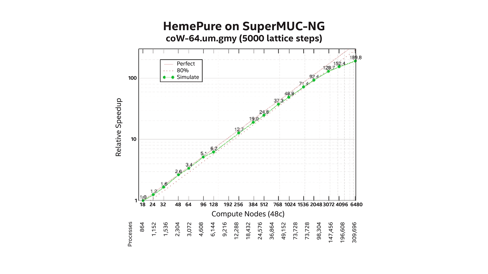
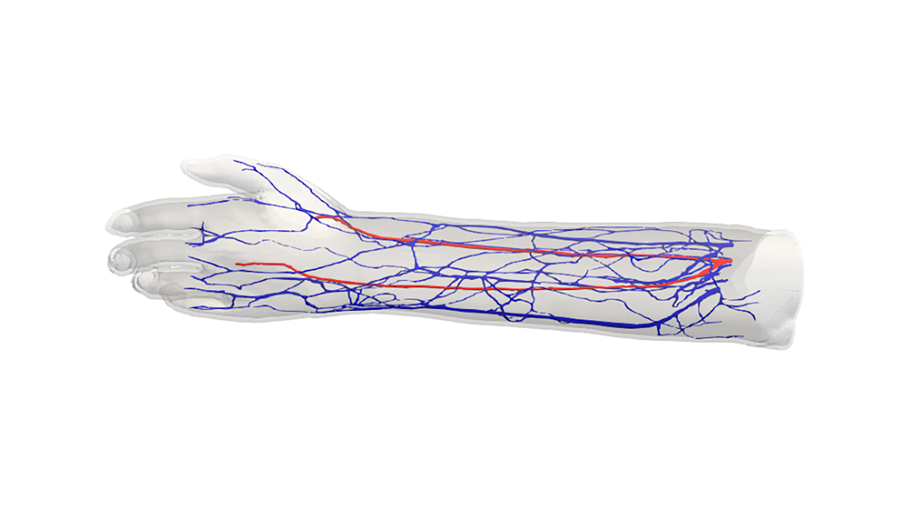

Expanding the SuperMUC-NG will support more powerful computing with multiple XPU architectures and high-performance storage.
At a glance:
Leibniz Supercomputing Center (LRZ) supports groundbreaking research and education across a wide range of disciplines.
LRZ recently announced plans to expand the SuperMUC-NG supercomputer to include 4th Gen Intel® Xeon® Scalable processors with built-in acceleration for new HPC and AI workloads, plus Intel® Data Center GPU.
Leibniz Supercomputing Centre (LRZ), University College London (UCL), and other researchers are thinking big through their use of the SuperMUC-NG supercomputer as they report success towards the future simulation of high-fidelity full-human models on large scale machines. (“NG” stands for “Next Generation.”) Specifically, two related flagship efforts, which are part of the vast European CompBioMed Centre of Excellence, namely the HemeLB and concomitant Virtual Human projects. These efforts have demonstrated they can successfully capture the dynamics of blood flow in 3D human-scale vascular simulations with a 190x strong scaling speedup of the HemeLB simulation on SuperMUC-NG1 and ability to visualize that data photorealistically on SuperMUC-NG using Intel® OSPRay Studio which is part of the Intel® oneAPI toolkit.2
SuperMUC-NG. (Image Credit: Veronika Hohenegger for LRZ)
Computational methods based on human biology are now reaching maturity in the biomedical domain, rendering predictive models of health and disease increasingly relevant to clinical practice by providing a personalized aspect to treatment.3 CompBioMed is a European Commission H2020 funded Centre of Excellence focused on the use and development of computational methods for biomedical applications. LRZ, which is participating in CompBioMed, is one of the three national supercomputing centers in the Gauss Centre for Supercomputing (GCS)—Germany’s foremost supercomputing institution.
Flagship LRZ research efforts are using the SuperMUC-NG to demonstrate that it is indeed possible to scale 3D blood-flow modeling in realistic human vasculature and visualize the simulated data effectively. Full 3D modeling permits local flow features to be identified that are not possible when using lower dimensional models.4 The use of a 3D model also permits exact simulation of an individual’s vasculature.4
As the CompBioMed website notes “Cardiovascular disease accounts for half of sudden deaths in Europe; improvements in patient risk stratification and prediction of clinical intervention are both urgent and challenging.”5 The CompBioMed Centre of Excellence seeks to perform high fidelity HPC based simulations with the goal of providing clinical decision support within very short time frames (often minutes, hours, or a few days).5
LRZ is utilizing the existing SuperMUC-NG to demonstrate the feasibility of human-scale modeling. This coupled with photo real visualization utilizing the Intel oneAPI Rendering Toolkit running on SuperMUC-NG processors is advancing research efforts to perform detailed visualization of blood flow in human vasculature.
Both the HemeLB and Virtual Human efforts utilized the current SuperMUC-NG supercomputer, which placed 26th and 37th in the June 2022 Top500 list and High-Performance Conjugate Gradients (HPCG) benchmarks respectively.6
This Intel-based system offers researchers 6,336 Intel® Xeon® Platinum processor 8174 thin nodes with 96 GBytes of memory per node and 144 fat nodes, each of which contain 768 GBytes of memory. Cumulatively the SuperMUC-NG system provides over 300,000 processing cores for scientific research. The current system also uses an innovative direct warm-water cooling system that allows for super-efficient free cooling without chillers and reuse of the waste heat from the data center.7
To generate human-scale blood flow data in human vascular networks, the team ran the HemeLB software at scale on SuperMUC-NG.8 HemeLB is an open-source Lattice-Boltzmann code developed within the EU H2020 HPC CompBioMed Centre of Excellence for computational biomedicine. The software is designed to simulate large-scale three-dimensional fluid flow in complex sparse geometries. HemeLB is a distributed MPI code written in C++ by UCL. It can be freely downloaded from the HemeLB website.
Figure 1: Strong scaling behavior from 864 to over 100,000 MPI processes on SuperMUC-NG. (Source https://pop-coe.eu/blog/190x-strong-scaling-speed-up-of-hemelb-simulation-on-supermuc-ng)
According to the HemeLB blog, the team examined the strong scaling behavior of the code from 864 to 309,696 MPI processes where one processor core runs one MPI process. The reported 190x speed-up demonstrated that the code is able to realize an 80% scaling efficiency as shown in Figure 1.8
“Initial performance analysis has resulted in [the] largest known real-world deployment of the Application Performance Snapshot feature of [the] VTune Profiler.” —Jon McCullough (UCL), et al., Visualization of human-scale blood flow simulation using Intel OSPRay Studio on SuperMUC-NG
In testing the HemeLB code when running on SuperMUC-NG at scale, the Intel DevSummit presentation Visualization of human-scale blood flow simulation using Intel OSPRay Studio on SuperMUC-NG by Jon McCullough (University College London) et al. notes that “Initial performance analysis has resulted in [the] largest known real-world deployment of the Application Performance Snapshot feature of [the] VTune™ Profiler."9
The Virtual Human project is using SuperMUC-NG as part of their effort to perform the first full scale 3-D high fidelity simulations of blood flow in the human vasculature. Led by Peter Coveney within the Centre for Computational Science (CCS) at University College London (UCL), the project incorporates the efforts of colleagues and collaborators from both Europe and the USA. The members of the team include UCL, Leibniz Supercomputing Centre (LRZ), Jülich Supercomputing Centre (JSC), the IT’IS Foundation and the University of Tennessee at Chattanooga. LRZ is a core partner in this effort.10
Figure 2: The HemeLB forearm modeling use case. (Source: https://www.hpccoe.eu/2021/03/17/compbiomed-strong-scaling-performance-for-human-scale-blood-flow-modelling/)
One motivation behind the Virtual Human project is to give surgeons a tool to create high resolution blood flow simulations before operating on a patient. To date, the team notes they have been able to simulate the blood flow through an arteriovenous fistula in the vessels of the left forearm.11 This is a procedure where the surgeon artificially connects a major artery to a vein to increase blood flow through the vein to assist with dialysis. During her Intel booth presentation at ISC’21, Elisabeth Mayer demonstrated a real-time exploration using forearm data that was running on one node of SuperMUC-NG. This work was also recognized as one of the six finalists in the SciVis Showcase at SC21.12
The overall structure of the project and preliminary results are shown in Figure 3 (below). The open source Intel OSPRay Studio, included in the Intel oneAPI Rendering Toolkit, running on SuperMUC-NG is a central software component in the Virtual Human workflow. According to Mayer, HemeLB uses a development branch of the Intel oneAPI rendering toolkit to create an I/O plugin that maps volume data directly in memory with the Intel® Open Volume Kernel Library (Intel® Open VKL), also part of the Intel oneAPI Rendering Toolkit.
The overall structure of the project and preliminary results are shown in Figure 3 (below). The open source Intel OSPRay Studio, included in the Intel oneAPI Rendering Toolkit, running on SuperMUC-NG is a central software component in the Virtual Human workflow. According to Mayer, HemeLB uses a development branch of the Intel oneAPI rendering toolkit to create an I/O plugin that maps volume data directly in memory with the Intel® Open Volume Kernel Library (Intel® Open VKL), also part of the Intel oneAPI Rendering Toolkit.
Figure 3: Overall structure of the Virtual Human project. (Source LRZ)
The success of the HemeLB and Virtual Human projects demonstrate the LRZ researchers have been able to perform scientifically important work and achieve top performance at scale in simulation and modeling when using the current SuperMUC-NG system.13
“At the core of all LRZ activities is the user. It is our utmost priority to provide researchers with the resources and services they need to excel in their scientific domains. Over the last years, we’ve observed our users accessing our systems not only for classical modeling and simulation, but increasingly for data analysis with artificial intelligence methods.” —Prof. Dr. Dieter Kranzlmüller
At LRZ, Prof. Dr. Dieter Kranzlmüller notes “At the core of all LRZ activities is the user. It is our utmost priority to provide researchers with the resources and services they need to excel in their scientific domains. Over the last years, we’ve observed our users accessing our systems not only for classical modeling and simulation, but increasingly for data analysis with artificial intelligence methods.”14
“We will be using the new Intel 3rd generation Intel Xeon Scalable processors to power an Intel DAOS storage systems for extremely demanding AI workloads requiring very low latency storage, and we plan to use Intel Optane persistent memory 200 to run this system. We’re excited to get our new 3rd gen Intel system up and running.” —Prof. Dr. Dieter Kranzlmüller, Director, LRZ
To continue to provide researchers with leading edge resources that can handle the increased memory and processing requirements of AI, ML, HPDA, and HPC workloads, LRZ will implement Phase 2 of SuperMUC-NG. The forthcoming upgrade will include 240 nodes outfitted with the 4th Generation Intel® Xeon® Scalable processor (code named Sapphire Rapids) and Intel® Data Center GPU (code named Ponte Vecchio), integrated in Lenovo’s future SD650-I v3 server platform. The accompanying one petabyte of additional storage will be Intel’s distributed asynchronous object storage (DAOS) powered by 3rd Generation Intel Xeon Scalable CPUs and Intel® Optane™ persistent memory 200-series.
The HemeLB and the Virtual Human are just two flagship workloads that highlight LRZ scientific leadership. This is through their participation in the European CompBioMed Centre of Excellence along with the photo realism possible with the Intel oneAPI toolkit running on Intel Scalable Processors.

Drive actionable insight, count on hardware-based security, and deploy dynamic service delivery with Intel® Xeon® Scalable processors.
Explore the latest customer stories, case studies, and news releases highlighting data-centric innovations.
Learn how Intel® technologies can help provide the scalability needed for high-demand workloads and applications.
Get the latest information about Intel data center performance, flexibility, and scalability.